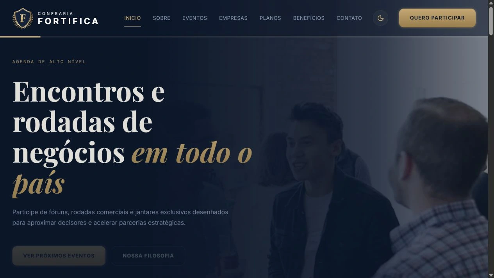
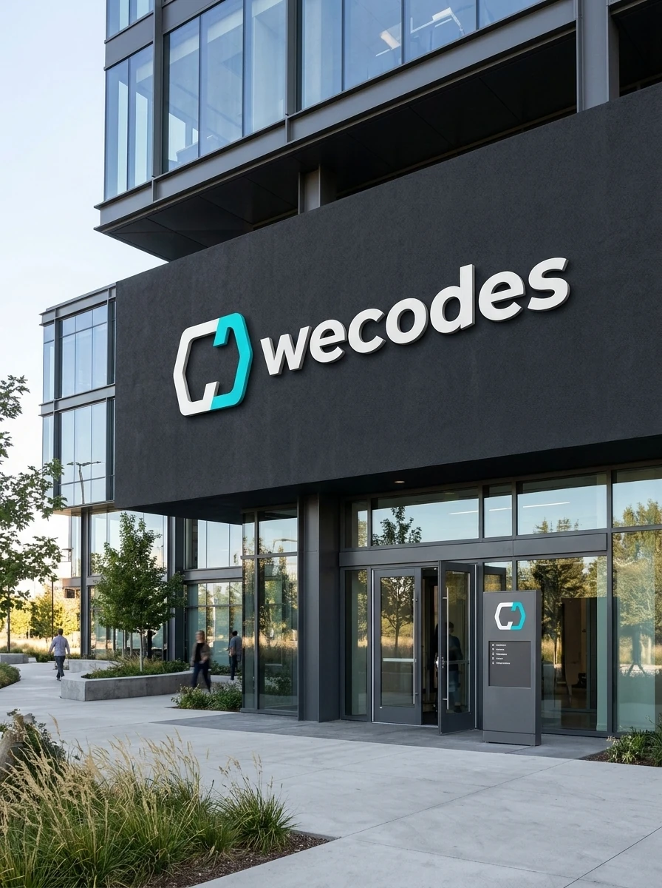
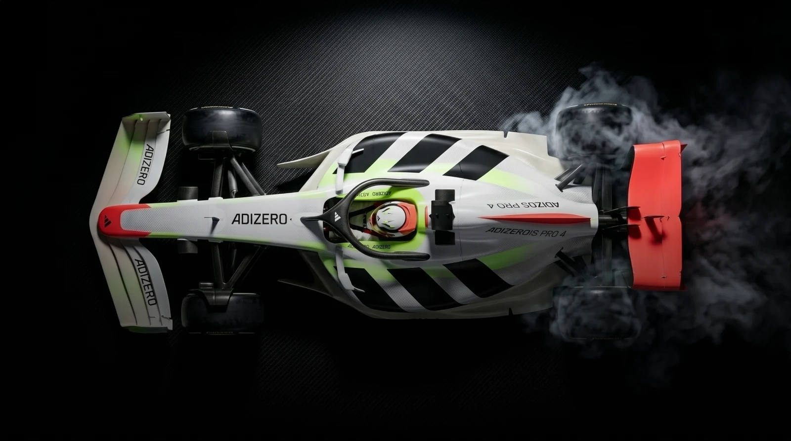
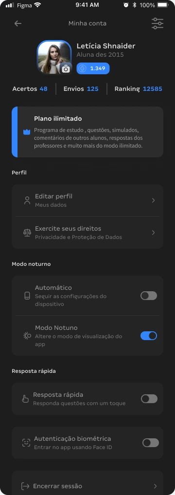
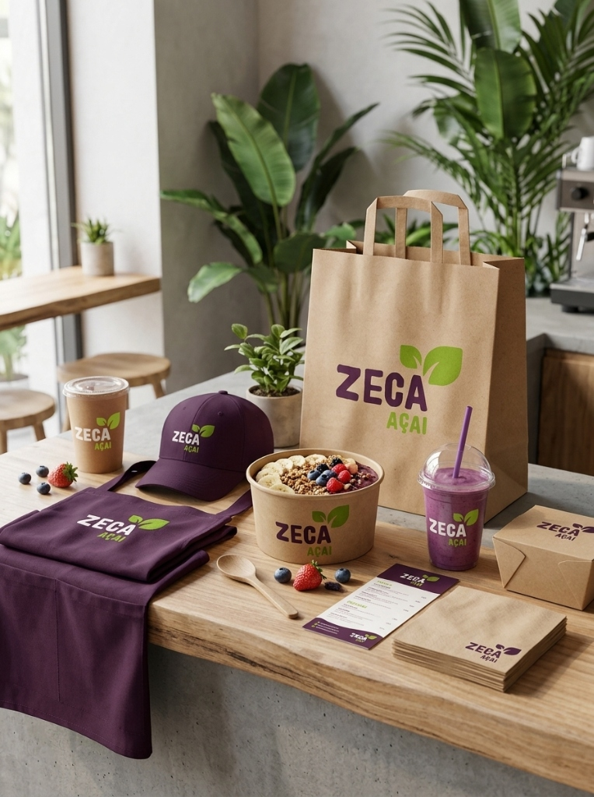
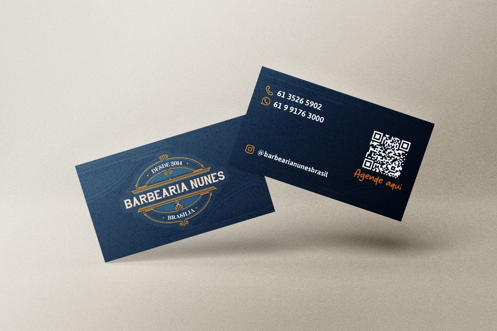
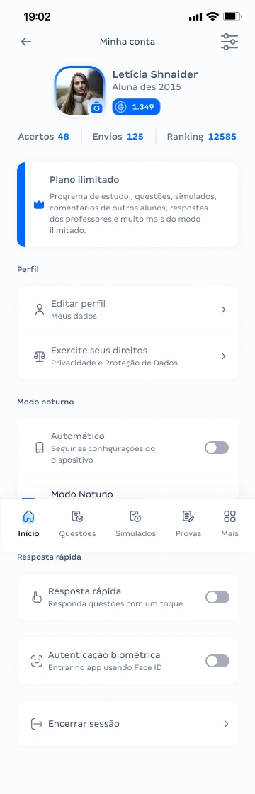
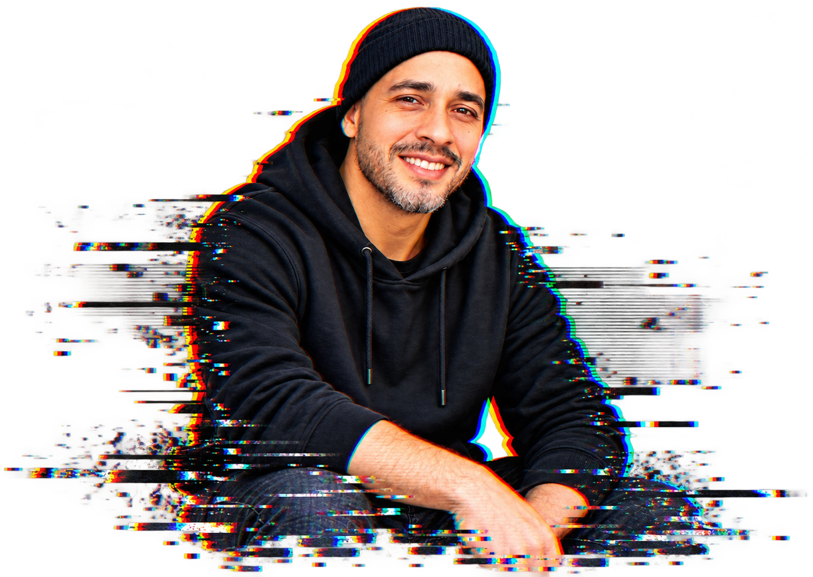

FORTIFICA.WEB DESIGN · PORTAL INSTITUCIONALUma presença digital que reúne a comunidade, os eventos e as empresas da Confraria Fortifica.

Ver case Confraria Fortifica — WebsiteDESIGN DE EXPERIÊNCIAS DIGITAIS COM PROPÓSITO E FORMA.

01 / IDENTIDADE VISUALWE
02 / CONCEITOADIZERO
03 / APP MOBILEMINHA 04 / SITE & APPUMA BOA
04 / SITE & APPUMA BOA 05 / BRANDINGRED
05 / BRANDINGRED
06 / BRANDINGZECA 07 / COMUNICAÇÃO VISUALVOCÊ TEM
07 / COMUNICAÇÃO VISUALVOCÊ TEM 08 / IDENTIDADE VISUALPLANETA
08 / IDENTIDADE VISUALPLANETAOutras ideias, novos pontos de vista.
Continue explorando os projetos.

Ver case Confraria Fortifica — Website Ver case NKZ — Biblioteca Digital
Ver case NKZ — Biblioteca Digital Ver case TRUE Eventos — Website
Ver case TRUE Eventos — Website Ver case Minha Saúde
Ver case Minha Saúde
Ver case Barbearia Nunes
02 / GRANDa primeira pergunta à interface, cada escolha aproxima uma ideia de quem vai usá-la.
CONHEÇA MEU OLHAR ↗03 / FALA FIN04 / REDBURNING
Sou designer baseado em Brasília. Minha atuação conecta experiência do usuário, interfaces e sistemas de design.
Gosto de encontrar a lógica por trás de um problema e dar a ela uma forma que as pessoas consigam compreender e usar. Cada decisão precisa ter uma razão.
Tem um produto, uma marca ou uma ideia esperando forma? Vamos conversar pelo WhatsApp.
Conversar no WhatsApp · +55 61 9 9923-5548 ↗